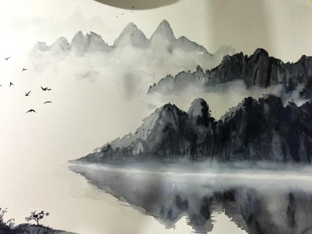
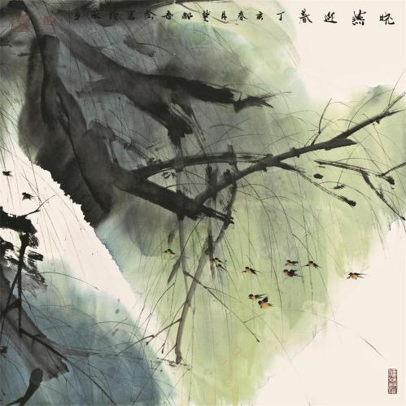

水墨画：在中国画中，以中国画特有的材料之一，墨为主要原料加以清水的多少引为浓墨、淡墨、干墨、湿墨、焦墨等，画出不同浓淡（黑、白、灰）层次。别有一番韵味称为“墨韵”。而形成水墨为主的一种绘画形式。
基本要素有三：单纯性、象征性、自然性。用中国特制的烟墨构成的“水墨画”成为中国画特有的一个画种。墨可分作墨、淡墨、浓墨、极淡墨和焦墨五墨，即焦墨（原墨）一浓墨一重墨一淡墨一清墨五层次。
相传始于唐代，成于五代，盛于宋元，明清及近代以来续有发展。以笔法为主导，充分发挥墨法的功能。“墨即是色”，指墨的浓淡变化就是色的层次变化，“墨分五彩”，指色彩缤纷可以用多层次的水墨色度代替之。北宋沈括《图画歌》云：“江南董源传巨然，淡墨轻岚为一体。”就 是说的水墨画。唐宋人画山水多湿笔，出现“水晕墨章”之效，元人始用干笔，墨色更多变化，有“如兼五彩”的艺术效果。唐代王维对画体提出“水墨为上”，后人宗之。长期以来水墨画在中国绘画史上占着重要地位。
讲究“气韵生动”，不拘泥于物体外表的肖似，而多强调抒发作者的主观情趣。中国画讲求“以形写神”，追求一种“妙在似与不似之间”的感觉 讲究笔墨神韵，笔法要求：平、圆、留、重、变。墨法要求墨分五色，浓、淡、破、泼、渍、焦、宿。 讲究“骨法用笔”，不讲究焦点透视，不强调环境对于物体的光色变化的影响 讲究空白的布置和物体的“气势”。 可以说西洋画是“再现”的艺术，中国画是“表现”的艺术。国画是要表现“气韵”、“境界”。另外，中国画爱写诗词及提字，再加红印签名